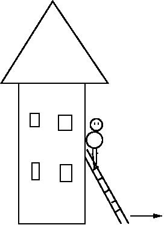
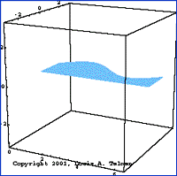

MAT100 for Data
Uke 4
22.01.2015
Alexander Lundervold
Sitter på E315. Stikk gjerne innom om du har spørsmål.
Space for å gå fremover, Esc for oversikt over slides
Praktisk info
- Obligatoriske øvinger:
Tre stykk. 4. feb, 18. feb, 25. mars - Skoleprøve 27. april
Se itsLearning for mer info.
Introduksjon
MAT100 omhandler hovedsakelig KALKULUS, som studerer forandring og forhold mellom funksjoner
Eksempel: Distanse og fart

- Gitt for bilen er i ethvert tidspunkt, hva er farten?
- Gitt farten, hvor er bilen etter en viss tid?
I tillegg:
- Numeriske metoder (inkludert noe bruk av MATLAB)
- Lineær algebra (matriser og lineære ligningssystemer)
Smakebit:

Stigen glipper. Hvor fort sklir den nedover veggen?
Smakebit:
Hvilke dimensjoner bør en sylindrisk beholder ha for å minimere materialkostnaden?
Smakebit
Hvor varm er kaffen etter 20 minutt?

Smakebit
Hva er volumet av vasen?

Smakebit
Går dette bra?
Smakebit
Rotasjon
Smakebit
Et godt stykke forbi vårt kurs, men spill-fysikk er basert på kalkulus (og mye vektorregning og lineære algebra)
Smakebit
Trenger
funksjoner, grenser, derivasjon, integrasjon, differensialligninger, ...
KALKULUS!
Hvorfor studere kalkulus?
- Sammen med diskret matematikk, lineær algebra og statistikk er det en del av grunnlaget for dataingeniørfaget
→ et viktig verktøy - Skjerper logisk sans, samt evnen til problemløsing
→ godt for hjernen - Kalkulus er og har vært en sentral komponent i mange beskrivelser og modeller av fenomener – naturlige og datagenererte/menneskeskapte. Uten kalkulus, intet moderne samfunn! (Og mye traustere dataspill)
→ bra for dannelsen
I dag
- Maks og min til kontinuerlige funksjoner
- Hva er den deriverte til en funksjon?